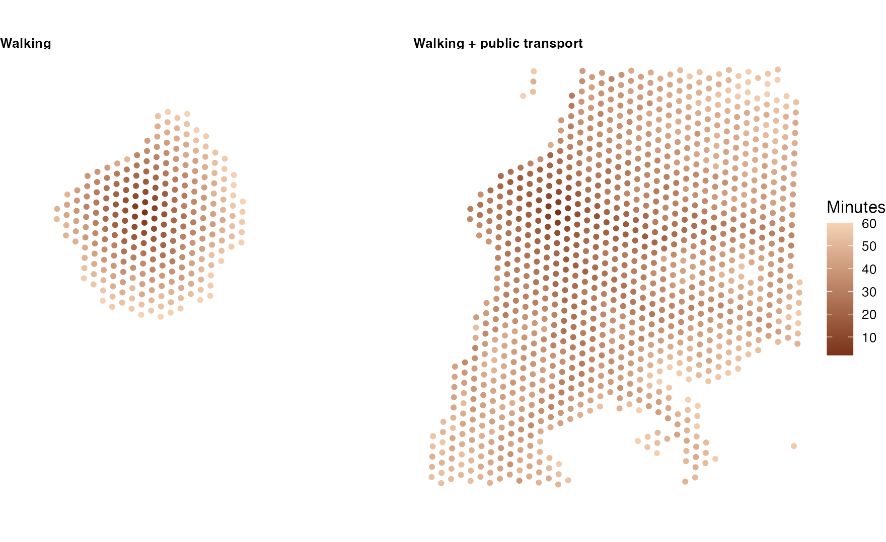
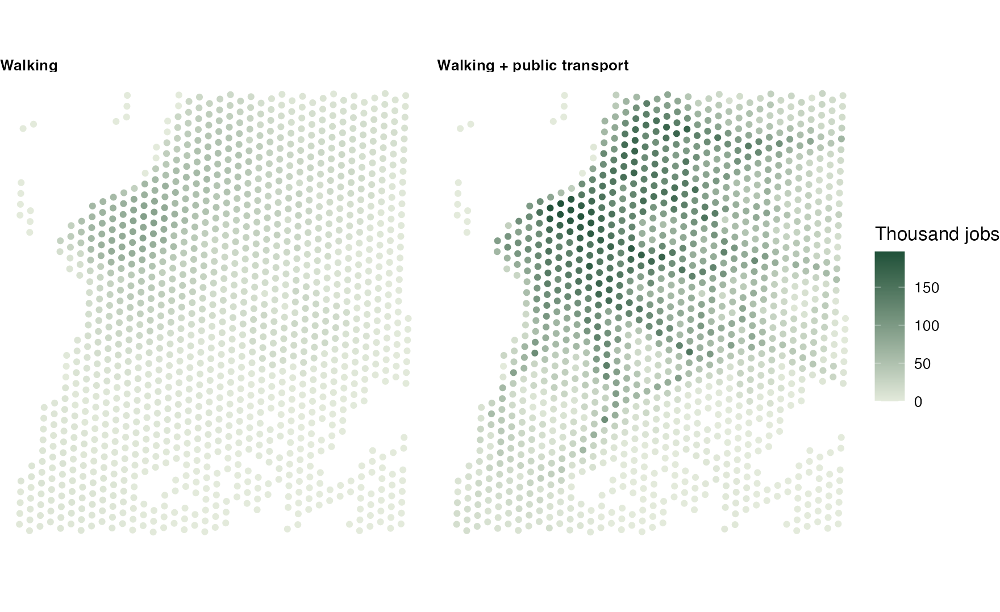

Example: mapping access to jobs and schools
Source:vignettes/articles/accessibility-map.Rmd
accessibility-map.RmdHow many jobs can people reach from where they live? This example answers that for Porto Alegre, on a grid of hexagonal cells, first walking and then walking with public transport, and draws the answer as a map. Everything below is one script; the output shown is the output it prints.
The data
The Porto Alegre sample of r5r 2.5.0 (an OpenStreetMap extract, the bus and train GTFS feeds, and a grid of 1,227 hexagonal cells with their population, jobs and schools), downloaded once into a temporary directory:
library(peabiru)
library(sf)
library(ggplot2)
poa <- file.path(tempdir(), "poa")
dir.create(poa, showWarnings = FALSE)
url <- "https://raw.githubusercontent.com/ipea/r5r/v2.5.0/r-package/inst/extdata/poa/"
for (f in c("poa_osm.pbf", "poa_eptc.zip", "poa_trensurb.zip",
"poa_hexgrid.csv", "poa_points_of_interest.csv")) {
if (!file.exists(file.path(poa, f))) {
download.file(paste0(url, f), file.path(poa, f), mode = "wb", quiet = TRUE)
}
}
network <- build_network(poa)
grid <- read.csv(file.path(poa, "poa_hexgrid.csv"))
head(grid)
#> id lon lat population schools jobs healthcare
#> 1 89a901291abffff -51.15825 -30.05385 0 0 1214 0
#> 2 89a9012a3cfffff -51.21187 -30.10058 159 0 0 0
#> 3 89a901295b7ffff -51.16521 -30.07544 1008 0 3 1
#> 4 89a901284a3ffff -51.20535 -30.09005 92 0 0 0
#> 5 89a9012809bffff -51.19575 -30.07839 577 0 9 0
#> 6 89a901285cfffff -51.21108 -30.08124 1170 0 427 0
colSums(grid[, c("population", "schools", "jobs")], na.rm = TRUE)
#> population schools jobs
#> 812935 194 337921Each cell is a point at its centre. The bus feed of the sample only has trips between late morning and early evening on weekdays, so public transport is routed from 14:00 on a Monday, over a 30-minute window of departures.
departure <- as.POSIXct("2019-05-13 14:00:00", tz = "America/Sao_Paulo")Travel times from one point
A first look: the travel time from one place, Farroupilha Park, to
the centre of every cell. travel_time_matrix() leaves out
the pairs that take longer than max_trip_duration.
poi <- read.csv(file.path(poa, "poa_points_of_interest.csv"))
park <- poi[poi$id == "farroupilha_park", ]
from_park <- rbind(
data.frame(mode = "Walking", travel_time_matrix(
network, park, grid, mode = "WALK", max_trip_duration = 60)),
data.frame(mode = "Walking + public transport", travel_time_matrix(
network, park, grid, mode = c("WALK", "TRANSIT"),
departure_datetime = departure, time_window = 30, max_trip_duration = 60))
)
sapply(split(from_park$travel_time_p50, from_park$mode),
function(t) c(cells = length(t), median_minutes = median(t)))
#> Walking Walking + public transport
#> cells 268 1100
#> median_minutes 41 39Within an hour, public transport reaches about four times as many cells as walking does. On a map, with each cell drawn as a dot at its centre:
cells <- st_as_sf(grid, coords = c("lon", "lat"), crs = 4326)
map <- merge(cells, from_park, by.x = "id", by.y = "to_id")
ggplot(map) +
geom_sf(aes(colour = travel_time_p50), size = 1.2) +
scale_colour_gradient(low = "#7a3318", high = "#f5d3b6", name = "Minutes") +
facet_wrap(~mode) +
theme_void() +
theme(strip.text = element_text(face = "bold", hjust = 0))
Jobs and schools within 30 minutes
accessibility() adds up, for each origin, the
opportunities at every destination reached within the cutoff (the
"step" decay function, the default). Five cells have no job
count; they count as zero, with a warning.
access <- rbind(
data.frame(mode = "Walking", accessibility(
network, grid, grid, opportunities_colnames = c("jobs", "schools"),
mode = "WALK", cutoffs = 30)),
data.frame(mode = "Walking + public transport", accessibility(
network, grid, grid, opportunities_colnames = c("jobs", "schools"),
mode = c("WALK", "TRANSIT"), departure_datetime = departure,
time_window = 30, cutoffs = 30))
)
#> Warning: `jobs` has 5 missing values, treated as 0.
#> Warning: `jobs` has 5 missing values, treated as 0.
head(access)
#> mode id opportunity percentile cutoff accessibility
#> 1 Walking 89a901291abffff jobs 50 30 15978
#> 2 Walking 89a901291abffff schools 50 30 12
#> 3 Walking 89a9012a3cfffff jobs 50 30 641
#> 4 Walking 89a9012a3cfffff schools 50 30 0
#> 5 Walking 89a901295b7ffff jobs 50 30 1884
#> 6 Walking 89a901295b7ffff schools 50 30 14Weighting each cell by the people who live there gives what the average resident reaches:
access <- merge(access, grid[, c("id", "population")], by = "id")
sapply(split(access, list(access$opportunity, access$mode)), function(a)
round(weighted.mean(a$accessibility, a$population)))
#> jobs.Walking schools.Walking
#> 21343 12
#> jobs.Walking + public transport schools.Walking + public transport
#> 67725 31Public transport roughly triples both: about 21 thousand jobs and 12 schools within half an hour on foot, against 68 thousand jobs and 31 schools with the buses and the train.
And the map of jobs reachable from each cell:
jobs <- merge(cells, access[access$opportunity == "jobs", ], by = "id")
ggplot(jobs) +
geom_sf(aes(colour = accessibility / 1000), size = 1.2) +
scale_colour_gradient(low = "#e3eadb", high = "#1f5139",
name = "Thousand jobs") +
facet_wrap(~mode) +
theme_void() +
theme(strip.text = element_text(face = "bold", hjust = 0))
Variations
-
Gradual access.
decay_function = "logistic"(or"exponential","linear","fixed_exponential") weights every job by its travel time instead of counting those under a hard limit; see the article Accessibility. -
Several cutoffs at once.
cutoffs = c(15, 30, 45)returns one row per cutoff, from a single routing pass. -
Percentiles. With
percentiles = c(25, 50, 75), the accessibility of a good, a typical and a bad departure in the window.
The maps on the home page draw
the same results as hexagons, with site/figures/figures.R
in the repository.